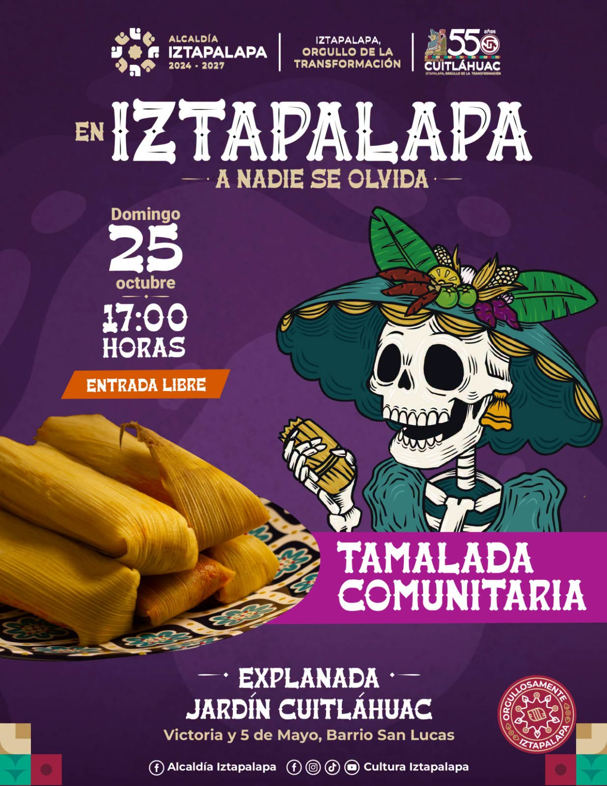

Una tradición que nos reúne
Portal de consulta y administración de los registros de participantes de la Tamalada Comunitaria.
📍 Sede indicada:
Parque Castores, Parque Nacional Cerro de la Estrella, Iztapalapa, 09800 Ciudad de México, CDMX.

🫔🗺️ Croquis comunitario de sedes
Un mapa con identidad de la Tamalada: cada sede lleva su ID y un tamalito; el color identifica el tipo de lugar.
📍 Directorio de sedes por ID
Selecciona «Ver en mapa» para centrar el punto localizado o «Google Maps» para abrir la búsqueda de la dirección en Google Maps. Los marcadores tienen un tamalito y el ID de la sede.
🫔 Registro de participantes
Alta, edición, descarga de la base de datos e impresión del listado.
TAMALADA COMUNITARIA — EN IZTAPALAPA, A NADIE SE LE OLVIDA
Sede: Parque Castores, Parque Nacional Cerro de la Estrella, Iztapalapa, 09800 Ciudad de México, CDMX.
Día: Domingo 25 de octubre de 2026 Horario: 17:00 horas Total de participantes: 0
| No. | Nombre | Apellido paterno | Apellido materno | Número telefónico | Acciones |
|---|